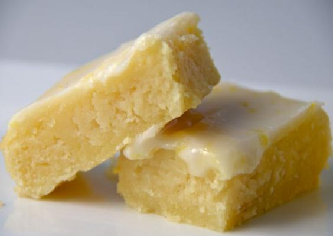

Lemonies

Ingredientes
Cantidades para molde 20x20
Torta
| Ingrediente |
Cantidad |
| Manteca |
120 g |
| Harina 0000 |
130 g |
| Huevos |
2 u |
| Azucar |
150 g |
| Jugo de limon exprimido |
3 cdas. |
| Ralladura de limon |
1 u |
Glaseado
| Ingrediente |
Cantidad |
| Azucar impalpable |
150 g |
| Jugo de limon |
4 cdas |
| Ralladura de limon |
A gusto |
Procedimiento
Para la torta
- Hacer una arenado manteca +azúcar +harina hasta tener un granulado.
- Unir huevos +ralladura + jugo de limón y agregar al batido anterior hasta que quede una preparación cremosa .
- Colocar el mix en molde previamente enmantecado o aceitado.
- Hornear a 180 grados por 10/15 ‘. Bañar con el glase en caliente.
Para el glase
- Unir los ingredientes.
- Bañar la torta en caliente.
- Dejar secar el glase.